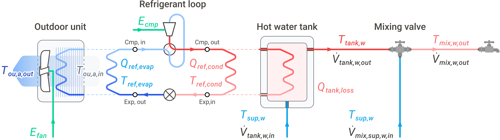
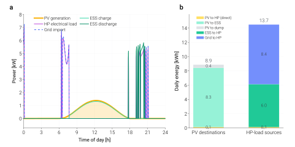

Air-source heat pump boiler (ASHPB)¶
The ASHPB family pairs the shared refrigerant cycle with an
outdoor-coil source side and a DHW tank sink side. This is the
validated reference example used by the Getting Started flow.
Overview¶
ASHPB solves the closed refrigerant cycle every step against an
outdoor coil (ε-NTU air-side) and a tank-coupled condenser. The
class is tmhp.AirSourceHeatPumpBoiler. Three composed
variants extend it with subsystems:
tmhp.ASHPB_STC_preheat— STC heats the mains feed before it reaches the tank.tmhp.ASHPB_STC_tank— a pumped collector loop charges the tank, with a storage high limit.tmhp.ASHPB_PV_ESS— PV generation + battery storage routes electricity to the compressor and auxiliaries before drawing grid.


Reference ASHPB instantiation. This physical wiring view is useful for the validated air-source DHW case, while the shared compressor / expander / heat-exchanger cycle core is reused by the other TMHP source and demand-side families.¶
Base usage¶
from tmhp import AirSourceHeatPumpBoiler
ashpb = AirSourceHeatPumpBoiler(ref="R32")
# Steady-state snapshot
result = ashpb.analyze_steady(
T_tank_w=55.0, # tank water [°C]
T0=7.0, # outdoor air [°C]
Q_ref_tank=8_000, # target condenser duty [W]
)
# Time-stepping dynamic run — see Getting Started for full schedule
# construction.
# df = ashpb.analyze_dynamic(...)
In a dynamic run the compressor cycles between T_tank_w_lower_bound
and T_tank_w_upper_bound (60 / 65 °C). The thermostat is followed
inside each step, so a step reports the fraction of it the compressor ran
(runtime_fraction [-]), its starts (hp_starts [-]) and heat and
power averaged over the step; min_on_time_s / min_off_time_s
(default 0) hold the compressor to a minimum run and rest time. See
Time step and the thermostat.
Default compressor efficiencies¶
A bare AirSourceHeatPumpBoiler evaluates three independent
second-order polynomials from tmhp.compressor_efficiency
(coefficient set BITZER-three-C3-absolute-N-2026-10-06, a scroll-compressor
fit to manufacturer calculation data):
Here \(PR\) is the pressure ratio and \(N\) is the physical shaft
speed in rev/s (rps); there is no relative-speed normalisation. The
same form is used for the volumetric (eta_cmp_vol), isentropic
(eta_cmp_isen) and effective electromechanical (eta_cmp)
efficiencies, each with its own coefficients, which are listed in
validation/coefficients/BITZER-three-C3-absolute-N-2026-10-06/coefficients.csv
and in the tuple constants of the module. The design notes are in
docs/notes/compressor-bitzer-defaults.md.
Warning
The fit covers pressure ratio 1.50–7.15 and shaft speed
33.8–72.5 rev/s (the convex hull of 3,899 scroll data points). The
model’s operating range (rps_min = 15 rev/s, rps_max up to
max(min(2 × rps_rated, 120), 1.5 × rps_rated), PR_cycle_max = 11) reaches outside
it. Outside the box the guarded fit holds the boundary value (high PR,
high speed) or continues the boundary slope downward (low PR, low speed),
and steady results report efficiency_extrapolated. At PR above 7 the
fitted isentropic efficiency is 0.37–0.45, which drives the computed
discharge temperature of R32 to 200–290 °C. The discharge-temperature
control holds T_dis_max by lowering the suction superheat and then
letting the suction go wet down to x_suction_min (0.9); a request it
cannot hold – R32 above roughly 220 °C dry – runs at the largest smaller
duty that it can hold (capacity_clamped == "max"), or is refused when
there is none (see Reference points and operating limits).
An explicitly supplied float or callable for the corresponding constructor
argument overrides these defaults. The earlier linear correlations
(1.0 - 0.020 * (r_p - 1.0) and similar) survive only as
tmhp.compressor_efficiency_legacy and in the
equipment_presets module; they are not the default.
Source-side mechanics¶
ASHPB models its outdoor coil as a variable-speed fan coupled to an ε-NTU heat exchanger. Fan electrical power follows an ASHRAE 90.1-style cubic-with-speed curve; coil ε is recomputed each step from the resolved refrigerant mass flow.
Sink-side mechanics¶
The sink is a single-node DHW tank (with optional stratification on
the _STC_tank variant). The tank energy balance is solved
implicitly per step with fsolve, jointly with the refrigerant
cycle.
By default the tank stays full: mains water replaces each litre drawn.
With tank_always_full=False the level varies instead. The draw lowers
it, and a make-up valve opens when the level reaches
tank_level_lower_bound (0.5) and admits dV_tank_w_in_refill
(1 L/s) until the level is back at tank_level_upper_bound (1.0). The
valve is followed inside each step, so a step can refill part of its
length. prevent_simultaneous_flow admits make-up only while nothing
is drawn. Either way the step balances the water and its energy
together,
with the draw at the end-of-step temperature. The envelope loss
UA_tank_wall does not depend on the level. The tank never drains
below TANK_LEVEL_MIN (0.1 % of its volume): a draw beyond what it
holds plus its make-up is cut, and the cut is reported as
dV_mix_w_out_unmet [m3/s]. A run of a level-varying tank starts with
tank_level_init of at least TANK_LEVEL_MIN.
Composed variants¶
The standalone ASHPB: outdoor coil ε-NTU evaporator, R32 cycle, DHW tank charge.
from tmhp import AirSourceHeatPumpBoiler
ashpb = AirSourceHeatPumpBoiler(ref="R32")
result = ashpb.analyze_steady(
T_tank_w=55.0,
T0=7.0,
Q_ref_tank=8_000,
)
Adds a flat-plate STC that preheats mains water entering the tank. Reduces the tank-charge duty the heat pump has to deliver.
from tmhp import ASHPB_STC_preheat
from tmhp.subsystems import SolarThermalCollector
stc = SolarThermalCollector(A_stc=4.0, stc_tilt=35.0, stc_azimuth=180.0)
model = ASHPB_STC_preheat(stc=stc, ref="R32")
A pumped collector loop draws tank water, heats it and returns it,
under a differential controller with a storage high limit
(T_stc_tank_max, 85 °C).
from tmhp import ASHPB_STC_tank
from tmhp.subsystems import SolarThermalCollector
stc = SolarThermalCollector(A_stc=4.0, stc_tilt=35.0, stc_azimuth=180.0)
model = ASHPB_STC_tank(stc=stc, ref="R32")
Photovoltaic generation + ESS preferentially feeds the compressor and auxiliaries.
from tmhp import ASHPB_PV_ESS
from tmhp.subsystems import EnergyStorageSystem, PhotovoltaicSystem
model = ASHPB_PV_ESS(
pv=PhotovoltaicSystem(),
ess=EnergyStorageSystem(),
ref="R32",
)
Solar inputs and the collector model¶
Irradiance inputs. I_DN_schedule is the direct-normal
irradiance (beam on a surface facing the sun) and I_dH_schedule the
diffuse-horizontal irradiance, step averages in W/m². They are not
added: the collector (and the PV array) transposes them to its own plane —
beam I_DN·cos θ, sky diffuse (Perez by default) and ground reflection
(albedo 0.2) — with the sun position of the step. For measured
global-horizontal data (e.g. KMA hourly GHI) split it first with
tmhp.weather.decompose_ghi_to_poa(), whose dni / dhi columns
are these two schedules.
Site and clock. The sun position needs where and when:
latitude / longitude (default Seoul, 37.57 °N 126.98 °E),
utc_offset_h (default 9, KST) and start_time, the local standard
time of simulation second 0 (default 00:00 on 20 March, a year-average sun
path). Set start_time to the first timestamp of your weather data,
at local midnight so that the boiler’s clock schedules agree. A beam given
while the sun is below the horizon for a whole step is dropped with a
warning: it means the site or the clock does not match the data.
Collector. SolarThermalCollector uses the
ISO 9806 / EN 12975 quasi-steady efficiency on the mean fluid temperature,
Q_u = A·[η0·(K_b·G_b + K_d·G_d) − a1·ΔT_m − a2·ΔT_m²], with the ASHRAE
incidence-angle modifier K_b = 1 − b0·(1/cos θ − 1). A_stc is the
area the coefficients refer to. The defaults are a representative
single-glazed flat plate (eta0_stc 0.78, a1_stc 3.6 W/(m²·K),
a2_stc 0.015 W/(m²·K²), b0_stc 0.10; stagnation about 170 °C at
1000 W/m²); take them from a datasheet for a given product. The pumped
loops circulate the ISO test flow, 0.02 kg/(s·m²) of collector, unless
dV_stc_w is set. The former construction parameters (A_stc_pipe,
alpha_stc, h_o_stc …) are accepted with a DeprecationWarning.
Loop control. A pumped loop is run by a differential controller. A
stopped pump starts when the idle collector is dT_stc_on (6 K) above the
sink, provided the run would hold; a running pump runs on while its outlet
stays dT_stc_off (2 K) above the sink. The gain must exceed the pump
power and the outlet stay below T_stc_boil (100 °C). Charging the tank
stops at T_stc_tank_max (85 °C) within the step, and so does circulation
once the outlet reaches T_stc_boil as the tank warms:
stc_runtime_fraction [-] is the share of the step the loop ran, and the
flow, pump power and delivered heat are step averages. After the tank has
reached its limit the loop starts again only once the tank is 2 K below it.
Every step closes Q_sol_stc = (Q_stc_w_out − Q_stc_w_in) + Q_l_stc with
Q_stc_w_out − Q_stc_w_in = Q_solar_tank.
With the default flow (the ISO test flow) the running outlet is only a few
kelvin above the inlet, so the 2 K stop threshold decides in both directions;
the start threshold matters for low-flow loops (dV_stc_w).
Freeze protection. The collector carries water (tank water or mains
water), so the system is a drain-back one: while the idle collector is below
T_stc_freeze (4 °C) the loop does not run and the collector is drained.
stc_freeze_protected [-] marks those steps (winter nights, and dull
winter days). T_stc_freeze=None declares a loop filled with antifreeze
and switches the protection off; a separate antifreeze loop with a heat
exchanger is not modelled.
Stagnation lock-out. When the tank is at its limit the loop stops and the
collector idles at its stagnation temperature (T_stc_stag [°C], 130–160 °C
on a clear day). Pumping tank water into an absorber that hot makes steam,
so a loop that a protection holds off while its idle collector is at or above
T_stc_lockout (130 °C) is locked out: it is not started again, even if a
draw cools the tank, until the collector has cooled 10 K below the lock-out
temperature. stc_stagnation_lockout [-] marks those steps. On a clear
day that fills the tank before noon the loop therefore collects nothing in
the afternoon; T_stc_lockout=None switches the lock-out off. The
collector has no heat capacity in the model, so its idle temperature is the
equilibrium one of the step.
The pump latch, the limit hold and the lock-out are state of the run: they
travel in DynamicState.subsystem_state between step() calls, and a
run starts with all of them cleared.
STC preheat¶
A SolarThermalCollector sits in the mains line
that feeds the tank: mains → collector → tank make-up inlet, while the
mixing valve’s cold side takes mains water directly. Only the water that
enters the tank passes the collector, so its flow is the tank’s make-up
flow; it is solved together with the tank temperature and the preheated
inflow is the reported T_tank_w_in [°C]. The collector is bypassed
outside the preheat_start_hour–preheat_end_hour window, without a
draw and when it would cool the feed; when its outlet reaches
T_stc_tank_max at the flow the end-of-step tank draws, it is bypassed for
the rest of the step. The mains pressure drives it: no pump power. The
freeze protection applies (bypassed and drained below T_stc_freeze); the
stagnation lock-out does not, there being no pump to hold off. Between draws
the collector has no flow, so on a clear day it idles far above 100 °C
(T_stc_stag [°C]) and the next draw passes through it: check that column
before relying on this placement where draws are rare.
import numpy as np
import pandas as pd
import pvlib
from tmhp import ASHPB_STC_preheat
from tmhp.subsystems import SolarThermalCollector
stc = SolarThermalCollector(
A_stc=4.0, # 4 m² collector area
stc_tilt=35.0,
stc_azimuth=180.0,
start_time="2026-03-20", # local time of second 0 (Seoul by default)
)
model = ASHPB_STC_preheat(stc=stc, ref="R32")
Drive it the same way as base ASHPB, adding irradiance schedules
(I_DN_schedule, I_dH_schedule) — direct-normal and
diffuse-horizontal, both in W/m² per step:
dt_s = 60
n_steps = 24 * 3600 // dt_s
# Clear-sky DNI / DHI for Seoul on the start day (step midpoints).
site = pvlib.location.Location(37.57, 126.98, "Asia/Seoul")
times = pd.date_range("2026-03-20", periods=n_steps, freq=f"{dt_s}s", tz="Asia/Seoul")
sky = site.get_clearsky(times + pd.Timedelta(seconds=dt_s / 2))
I_DN = sky["dni"].to_numpy()
I_dH = sky["dhi"].to_numpy()
T0 = np.full(n_steps, 5.0)
dhw = np.zeros(n_steps)
df = model.analyze_dynamic(
simulation_period_sec = n_steps * dt_s,
dt_s = dt_s,
T_tank_w_init_C = 50.0,
dhw_usage_schedule = dhw,
T0_schedule = T0,
I_DN_schedule = I_DN,
I_dH_schedule = I_dH,
)
To quantify the contribution, run the same schedules through a base
AirSourceHeatPumpBoiler and difference the daily compressor
energy:
from tmhp import AirSourceHeatPumpBoiler
base = AirSourceHeatPumpBoiler(ref="R32").analyze_dynamic(
simulation_period_sec = n_steps * dt_s,
dt_s = dt_s,
T_tank_w_init_C = 50.0,
dhw_usage_schedule = dhw,
T0_schedule = T0,
)
def daily_kwh(s, dt_s=dt_s):
return float(s.sum()) * dt_s / 3.6e6
saving = daily_kwh(base["E_cmp [W]"]) - daily_kwh(df["E_cmp [W]"])
print(f"STC preheat saving: {saving:.2f} kWh/day")
- class tmhp.ASHPB_STC_preheat(*, stc, **kwargs)[source]
Bases:
STCPreheat,AirSourceHeatPumpBoilerAirSourceHeatPumpBoiler+SolarThermalCollectorin mains preheat placement.The behaviour and energy columns are those of
tmhp._stc_scenarios.STCPreheat: the collector runs at the tank’s make-up flow andQ_stc_w_out - Q_stc_w_in = Q_solar_tankis the heat the preheated inflow brings into the tank.- Parameters:
stc (
SolarThermalCollector) – Collector, site and clock (its pump power is set to 0 on a copy: the mains pressure drives the flow).**kwargs (
Any) – Forwarded toAirSourceHeatPumpBoiler.
- Raises:
TypeError – If stc is not a
SolarThermalCollectorinstance.
STC tank loop¶
- class tmhp.ASHPB_STC_tank(*, stc, **kwargs)[source]
Bases:
STCTankLoop,AirSourceHeatPumpBoilerAirSourceHeatPumpBoiler+SolarThermalCollectorin tank-loop placement.The behaviour and energy columns are those of
tmhp._stc_scenarios.STCTankLoop: per stepQ_sol_stc = (Q_stc_w_out - Q_stc_w_in) + Q_l_stcandQ_stc_w_out - Q_stc_w_in = Q_solar_tank;E_totincludesE_stc_pump.- Parameters:
stc (
SolarThermalCollector) – Collector, loop pump and controller settings, site and clock.**kwargs (
Any) – Forwarded toAirSourceHeatPumpBoiler.
- Raises:
TypeError – If stc is not a
SolarThermalCollectorinstance.
UV lamp¶
A UVLamp (uv= on the base boilers and the PV +
ESS variants) switches on num_switching times per period_sec for
exposure_sec each. Each step reports the lamp’s step-average power
E_uv [W] (the schedule integrated over the step, so a 12 s exposure is
12 s of lamp energy at any dt_s) and the heat it gives the tank water,
Q_uv_tank = heat_to_water_fraction · E_uv. The default fraction 0.9
assumes the lamp in a quartz sleeve inside the tank (its UV, light and heat
all end in the water) and its ballast (about 90 % efficient) in the control
box outside; set 1.0 when both are inside the tank boundary.
E_tot [W] includes the lamp: E_tot = E_cmp + E_ou_fan + E_uv on the
base boiler (E_pmp in place of the fan on the ground- and water-source
boilers). The PV + ESS variants route that E_tot, so the lamp is counted
once. COP columns (cop_ref, cop_sys) describe the heat-pump cycle and
do not include the lamp.
PV + ESS¶
PhotovoltaicSystem generation feeds the
compressor and auxiliaries; an EnergyStorageSystem
buffers midday surplus for evening load; grid import covers
whatever the two cannot supply.
No grid export. DC power that neither the heat pump nor the battery can
take is discarded and reported as E_dump [W]; nothing is sold to the grid
(a large array on a small load dumps a large share of its output).
Where the efficiencies act. The charge controller (eta_ctrl) sits between
the array output E_pv_out and E_ctrl_out; the battery efficiencies
(eta_ess_chg, eta_ess_dis) act inside the battery; the inverter
(eta_inv, 0 < eta_inv <= 1) acts on the DC power that reaches it, i.e.
PV direct plus battery discharge. Every loss is a result column, so each step
closes (all in W):
E_pv_out = Q_l_ctrl + E_pv_to_inv + E_ess_chg + E_dump
E_tot = E_inv_out + E_grid_import
E_inv_out = eta_inv * (E_pv_to_inv + E_ess_dis), Q_l_inv = (1 - eta_inv) * (E_pv_to_inv + E_ess_dis)
E_ess_chg - E_ess_dis = C_ess_max * dSOC_ess/dt + Q_l_ess
E_tot is the whole electric draw of the system: compressor, E_ou_fan
(outdoor fan) and the UV lamp E_uv when one is attached. E_inv_out is the
AC power out of the inverter only (it excludes E_grid_import). cop_grid is
Q_tank_w_out / E_grid_import and is NaN while the import is at most 1 mW
(tmhp.subsystems.GRID_IMPORT_FLOOR_W): without a grid draw there is no
meaningful ratio.
The battery state of charge belongs to the run: every analyze_dynamic starts
from ess.SOC_init again, so the same model run twice gives the same result.
from tmhp import ASHPB_PV_ESS
from tmhp.subsystems import EnergyStorageSystem, PhotovoltaicSystem
model = ASHPB_PV_ESS(
pv = PhotovoltaicSystem(),
ess = EnergyStorageSystem(),
ref = "R32",
)
# Pass I_DN_schedule + I_dH_schedule to analyze_dynamic exactly
# as you would for ASHPB_STC_preheat.


24-hour ASHPB_PV_ESS run with a clear-sky irradiance profile
and default PhotovoltaicSystem / EnergyStorageSystem sizes.
Panel (b) makes the sizing tradeoff readable: shrinking the ESS
column on the left would push more of the right-hand bar from
“PV” to “Grid”. Generated by
scripts/visualization/pv_ess_energy_balance.py.¶
- class tmhp.ASHPB_PV_ESS(*, pv, ess=None, eta_inv=0.95, T_inv_K=313.15, **kwargs)[source]
Bases:
AirSourceHeatPumpBoilerASHPB scenario where the heat pump is supplied by PV + ESS + Grid.
The PV/ESS routing is resolved synchronously inside
_augment_resultsafter the HP compressor load is known. No 1-step lag: the PV energy is allocated to the exact HP load produced in the same timestep.The battery state of charge belongs to a run: it is restored to
ess.SOC_initwhen a run starts (make_initial_state, which bothanalyze_dynamicand an externalstep()driver call), so repeating a run on the same model reproduces it.- Parameters:
pv (
PhotovoltaicSystem) – Pure-physics PV + charge-controller model.ess (
EnergyStorageSystem|None) – Pure-physics battery model withcharge()/discharge().eta_inv (
float) – Inverter DC→AC efficiency [–],0 < eta_inv <= 1.T_inv_K (
float) – Inverter temperature for entropy calculation [K].**kwargs – Forwarded to
AirSourceHeatPumpBoiler.
- __init__(*, pv, ess=None, eta_inv=0.95, T_inv_K=313.15, **kwargs)[source]
- Parameters:
pv (
PhotovoltaicSystem)ess (
EnergyStorageSystem|None)eta_inv (
float)T_inv_K (
float)
- make_initial_state(T_tank_w_init_C, tank_level_init=1.0)[source]
Start of a run: tank state as the base class, battery back at
SOC_init.- Parameters:
T_tank_w_init_C (
float)tank_level_init (
float)
- Return type:
DynamicState
API reference¶
Integrated System Model: Air Source Heat Pump Boiler (ASHPB).
This system class orchestrates the dynamic interaction between distinct thermodynamic sub-components to simulate the overall heating performance. While implemented as an integrated model, its physical calculations represent the behavior of:
Refrigerant Cycle (Vapor-Compression): Evaluates thermodynamic states using CoolProp, enforcing superheat/subcool margins.
Heat Pump Compressor: Models the compression process using isentropic and volumetric efficiencies to compute the actual discharge enthalpy and mass flow rate. The compressor power is determined from the enthalpy difference and the mass flow rate.
Expansion Valve: Modeled as an isenthalpic expansion device (constant enthalpy) that throttles the refrigerant from the condensing pressure down to the evaporating pressure.
Heat Exchangers (Condenser & Evaporator):
Condenser: Placed inside the tank (hydronic), utilizing a static overall heat transfer coefficient (UA_tank_hx).
Evaporator: Air-coupled outdoor unit, utilizing a dynamic overall heat transfer coefficient (UA_ou) that scales non-linearly with fan airflow (Colburn j-factor analogy).
Thermal Storage Tank: Modeled with lumped-capacitance and DHW mixing logic.
At each time step, the model finds the minimum-power operating point (compressor + fan) via bounded 1-D optimisation (Brent’s method) over the evaporator approach temperature difference.
Note
See the project paper (KJACR 2025) for the underlying refrigerant-cycle theory and component-level modelling assumptions of this system.
Optional sub-components (injected via constructor):
- SolarThermalCollector — tank-circuit or mains-preheat placement
- (future) PVPanel — photovoltaic integration
Tank-level management and UV disinfection are built-in features configured through constructor parameters.
- tmhp.air_source_heat_pump_boiler.BINDING_OUTDOOR_COIL = 'outdoor_coil'¶
capacity_bindingof a duty reduced to what the outdoor coil absorbs (the family’s name for the shared"source_heat_exchanger").
- class tmhp.air_source_heat_pump_boiler.AirSourceHeatPumpBoiler(ref='R134a', V_cmp_ref=None, eta_cmp_isen=None, eta_cmp_vol=None, eta_cmp=None, dT_superheat=5.0, dT_subcool=5.0, UA_tank_hx=None, UA_ou_rated=None, n_ou=0.65, dV_fan_a_rated=None, dP_fan_rated=None, A_cross=None, eta_fan_rated=None, T_tank_w_upper_bound=65.0, T_tank_w_lower_bound=60.0, T_mix_w_out=40.0, T_sup_w=15.0, hp_capacity=15000.0, dV_mix_w_out_max=0.0045, r0=0.2, H=1.2, x_shell=0.005, x_ins=0.05, k_shell=25, k_ins=0.03, h_o=15, tank_always_full=True, tank_level_lower_bound=0.5, tank_level_upper_bound=1.0, dV_tank_w_in_refill=0.001, prevent_simultaneous_flow=False, hp_on_schedule=None, min_on_time_s=0.0, min_off_time_s=0.0, stc=None, pv=None, uv=None, vsd_coeffs=None, T_sur=20.0, dT_hx_min=0.5, PR_cycle_min=1.5, PR_cycle_max=11.0, rps_min=15.0, rps_max=None, V_disp_cmp=None, eta_cmp_electro_mech=None, UA_tank=None, UA_cond_design=None, UA_evap_design=None, dV_ou_fan_a_design=None, dP_ou_fan_design=None, A_cross_ou=None, eta_ou_fan_design=None, vsd_coeffs_ou=None, *, rps_rated=None, m_dot_ref_rated=None, rated_condition=None, dV_fan_a_ref=None, dV_fan_a_min=None, dV_fan_a_max=None, T_dis_max='auto', x_suction_min=0.9)[source]¶
Bases:
ReferenceStateMixinAir source heat pump boiler with outdoor-air evaporator.
The refrigerant cycle is resolved via CoolProp with user-specified superheat / subcool margins. The condenser approach temperature is determined analytically from either the circulating- water flow (constant-surface-temperature ε-NTU) or the backward-compatible
dT_ref_tank = Q_ref_tank / UA_tank_hxfallback, and a bounded 1-D optimiser (Brent’s method) minimises total electrical input (E_cmp + E_ou_fan) over the evaporator approach.Unless explicitly injected, compressor efficiencies use the shared baseline correlations in
tmhp.compressor_efficiency(BITZER 2026-10-06), evaluated at PR and actual shaft speed in rev/s. Scalar and user-supplied callable overrides remain supported.- Parameters:
ref (
str)V_cmp_ref (
float|None)eta_cmp_isen (
float|Callable|None)eta_cmp_vol (
float|Callable|None)eta_cmp (
float|Callable|None)dT_superheat (
float)dT_subcool (
float)UA_tank_hx (
float|None)UA_ou_rated (
float|None)n_ou (
float)dV_fan_a_rated (
float|None)dP_fan_rated (
float|None)A_cross (
float|None)eta_fan_rated (
float|None)T_tank_w_upper_bound (
float)T_tank_w_lower_bound (
float)T_mix_w_out (
float)T_sup_w (
float)hp_capacity (
float)dV_mix_w_out_max (
float)r0 (
float)H (
float)x_shell (
float)x_ins (
float)k_shell (
float)k_ins (
float)h_o (
float)tank_always_full (
bool)tank_level_lower_bound (
float)tank_level_upper_bound (
float)dV_tank_w_in_refill (
float)prevent_simultaneous_flow (
bool)hp_on_schedule (
list[tuple[float,float]] |None)min_on_time_s (
float)min_off_time_s (
float)stc (
SolarThermalCollector|None)pv (
PhotovoltaicSystem|None)vsd_coeffs (
dict|None)T_sur (
float)dT_hx_min (
float)PR_cycle_min (
float)PR_cycle_max (
float)rps_min (
float)rps_max (
float|None)V_disp_cmp (
float|None)eta_cmp_electro_mech (
float|Callable|None)UA_tank (
float|None)UA_cond_design (
float|None)UA_evap_design (
float|None)dV_ou_fan_a_design (
float|None)dP_ou_fan_design (
float|None)A_cross_ou (
float|None)eta_ou_fan_design (
float|None)vsd_coeffs_ou (
dict|None)rps_rated (
float|None)m_dot_ref_rated (
float|None)rated_condition (
Mapping[str,Any] |RatingCondition|None)dV_fan_a_ref (
float|None)dV_fan_a_min (
float|None)dV_fan_a_max (
float|None)T_dis_max (
float|Literal['auto'] |None)x_suction_min (
float|None)
- __init__(ref='R134a', V_cmp_ref=None, eta_cmp_isen=None, eta_cmp_vol=None, eta_cmp=None, dT_superheat=5.0, dT_subcool=5.0, UA_tank_hx=None, UA_ou_rated=None, n_ou=0.65, dV_fan_a_rated=None, dP_fan_rated=None, A_cross=None, eta_fan_rated=None, T_tank_w_upper_bound=65.0, T_tank_w_lower_bound=60.0, T_mix_w_out=40.0, T_sup_w=15.0, hp_capacity=15000.0, dV_mix_w_out_max=0.0045, r0=0.2, H=1.2, x_shell=0.005, x_ins=0.05, k_shell=25, k_ins=0.03, h_o=15, tank_always_full=True, tank_level_lower_bound=0.5, tank_level_upper_bound=1.0, dV_tank_w_in_refill=0.001, prevent_simultaneous_flow=False, hp_on_schedule=None, min_on_time_s=0.0, min_off_time_s=0.0, stc=None, pv=None, uv=None, vsd_coeffs=None, T_sur=20.0, dT_hx_min=0.5, PR_cycle_min=1.5, PR_cycle_max=11.0, rps_min=15.0, rps_max=None, V_disp_cmp=None, eta_cmp_electro_mech=None, UA_tank=None, UA_cond_design=None, UA_evap_design=None, dV_ou_fan_a_design=None, dP_ou_fan_design=None, A_cross_ou=None, eta_ou_fan_design=None, vsd_coeffs_ou=None, *, rps_rated=None, m_dot_ref_rated=None, rated_condition=None, dV_fan_a_ref=None, dV_fan_a_min=None, dV_fan_a_max=None, T_dis_max='auto', x_suction_min=0.9)[source]¶
- Parameters:
ref (
str)V_cmp_ref (
float|None)eta_cmp_isen (
float|Callable|None)eta_cmp_vol (
float|Callable|None)eta_cmp (
float|Callable|None)dT_superheat (
float)dT_subcool (
float)UA_tank_hx (
float|None)UA_ou_rated (
float|None)n_ou (
float)dV_fan_a_rated (
float|None)dP_fan_rated (
float|None)A_cross (
float|None)eta_fan_rated (
float|None)T_tank_w_upper_bound (
float)T_tank_w_lower_bound (
float)T_mix_w_out (
float)T_sup_w (
float)hp_capacity (
float)dV_mix_w_out_max (
float)r0 (
float)H (
float)x_shell (
float)x_ins (
float)k_shell (
float)k_ins (
float)h_o (
float)tank_always_full (
bool)tank_level_lower_bound (
float)tank_level_upper_bound (
float)dV_tank_w_in_refill (
float)prevent_simultaneous_flow (
bool)hp_on_schedule (
list[tuple[float,float]] |None)min_on_time_s (
float)min_off_time_s (
float)stc (
SolarThermalCollector|None)pv (
PhotovoltaicSystem|None)vsd_coeffs (
dict|None)T_sur (
float)dT_hx_min (
float)PR_cycle_min (
float)PR_cycle_max (
float)rps_min (
float)rps_max (
float|None)V_disp_cmp (
float|None)eta_cmp_electro_mech (
float|Callable|None)UA_tank (
float|None)UA_cond_design (
float|None)UA_evap_design (
float|None)dV_ou_fan_a_design (
float|None)dP_ou_fan_design (
float|None)A_cross_ou (
float|None)eta_ou_fan_design (
float|None)vsd_coeffs_ou (
dict|None)rps_rated (
float|None)m_dot_ref_rated (
float|None)rated_condition (
Mapping[str,Any] |RatingCondition|None)dV_fan_a_ref (
float|None)dV_fan_a_min (
float|None)dV_fan_a_max (
float|None)T_dis_max (
float|Literal['auto'] |None)x_suction_min (
float|None)
- ref: str¶
- V_cmp_ref: float¶
- dT_superheat: float¶
- dT_subcool: float¶
- dT_hx_min: float¶
- PR_cycle_min: float¶
- PR_cycle_max: float¶
- rps_min: float¶
- rps_max: float¶
The rated-speed search bound until
_initialize_reference_state()replaces it withdefault_rps_max(rps_rated)(when_rps_max_derived).
- T_dis_max: float | None¶
- x_suction_min: float | None¶
- hp_capacity: float¶
- n_ou: float¶
- dP_fan_rated: float¶
- eta_fan_rated: float¶
- E_fan_rated: float¶
- vsd_coeffs: dict¶
- fan_params: dict¶
- eta_cmp_isen: float | Callable¶
- eta_cmp_vol: float | Callable¶
- eta_cmp: float | Callable¶
- tank_physical: dict¶
- UA_tank_wall: float¶
- T_sur_K: float¶
- V_tank_full: float¶
- C_tank: float¶
- dV_mix_w_out_max: float¶
- T_tank_w_upper_bound: float¶
- T_tank_w_lower_bound: float¶
- T_sup_w: float¶
- T_sup_w_K: float¶
- T_tank_w_in: float¶
- T_mix_w_out: float¶
- T_tank_w_in_K: float¶
- T_mix_w_out_K: float¶
- tank_always_full: bool¶
- tank_level_lower_bound: float¶
- tank_level_upper_bound: float¶
- dV_tank_w_in_refill: float¶
- prevent_simultaneous_flow: bool¶
- hp_on_schedule: list[tuple[float, float]]¶
- min_on_time_s: float¶
- min_off_time_s: float¶
- stc: SolarThermalCollector | None¶
- pv: PhotovoltaicSystem | None¶
- dV_tank_w_in: float¶
- dV_tank_w_out: float¶
- dV_mix_sup_w_in: float¶
- dV_mix_w_out: float¶
- analyze_steady(T_tank_w, T0, Q_ref_tank, *, m_dot_w=None, return_dict=True)[source]¶
Run a steady-state performance snapshot.
Evaluates the refrigerant cycle at a given operating point (T_tank_w, T0, Q_ref_tank) without solving the tank energy balance or tracking dynamic flows.
- Parameters:
T_tank_w (
float) – Tank water temperature [°C] — treated as a given input.T0 (
float) – Dead-state / outdoor-air temperature [°C].Q_ref_tank (
float) – Target condenser heat rate [W].m_dot_w (
float|None) – Circulating-water mass flow rate [kg/s]. When positive, the condenser approach uses a constant-surface-temperature ε-NTU model with the shared water specific heatc_w(tmhp.constants).return_dict (
bool) – If True return dict; else single-row DataFrame.
- Returns:
Cycle state plus diagnostic flags.
Three keys are useful for branching:
"converged"(bool) — True only when the HX optimisation and the SciPy optimiser both succeeded."failure_reason"(str) — one of"none","cycle_invalid","t_cond_below_t_in","pr_above_max","discharge_temp_above_max"(even under the discharge-temperature control and at a reduced duty the discharge exceedsT_dis_max),"eta_isen_below_min"(the shipped isentropic fit, extrapolated, is below 0.30),"hx_not_converged", or"optimizer_failed"."failure_detail"(str, failures only) — on"cycle_invalid", which check oftmhp.dynamic_context.unphysical_cycle_detail()rejected a solved cycle; on"hx_not_converged", which fan limit the outdoor coil fails at every approach the cycle reaches ("outdoor_coil_short_at_max_airflow","outdoor_coil_excess_at_min_airflow"or"outdoor_coil_no_band")."capacity_clamped"(str | None) —"min"when the requested duty was below what the compressor delivers atrps_minand the cycle was solved at that floor instead,"max"for the corresponding ceiling case,Nonewhen the request was met exactly. A clamped point is converged: the request simply lay outside the machine’s deliverable band, which a real inverter unit answers by running at its limit and cycling. Compare"Q_ref_tank [W]"against"Q_ref_tank_request [W]"to recover the shortfall or excess. A"max"point carries"capacity_binding":"compressor"(rps_max), or the operating limit the request ran into when a smaller duty runs –"discharge_temperature"(T_dis_max),"pressure_ratio"(PR_cycle_max),"outdoor_coil"(the coil is short at the fan’s largest airflow) or"compressor_efficiency"(the shipped fit’s floor). The largest duty that runs is then returned, with"Q_max [W]"and"Q_request [W]"; seetmhp.compressor_envelope.reduce_duty_within_envelope()."efficiency_extrapolated"(bool) — a default efficiency fit is evaluated outside its data at this point."discharge_control"(bool),"dT_ref_superheat [K]","x_ref_cmp_in [-]"— whether the discharge-temperature control heldT_dis_maxand the suction state it used (superheat reduced first, then wet suction down tox_suction_min); seetmhp.compressor_envelope.
Every failure – an infeasible cycle, a solved cycle that is not an operating point, an outdoor coil that cannot carry the duty, a search that did not settle – returns the same off-mode state:
hp_is_on = False,converged = False,E_cmp = 0,Q_ref_tank = 0, NaN COP, withfailure_reason(andfailure_detailwhere there is one). A request that fails on a limit a smaller duty cures is not a failure when such a duty runs (capacity_clamped = "max"above);"cycle_invalid"with no cycle at all (a condensing temperature at or above the critical point) is not reduced.- Return type:
dict|DataFrame
- make_initial_state(T_tank_w_init_C, tank_level_init=1.0)[source]¶
Build the initial carried state for a
step()-driven run.A tank whose level varies (
tank_always_full=Falseorprevent_simultaneous_flow) starts with at leastTANK_LEVEL_MINof water: an empty tank has no temperature to start from.- Parameters:
T_tank_w_init_C (
float)tank_level_init (
float)
- Return type:
DynamicState
- step(state, inputs, dt_s)[source]¶
Advance one timestep from state under inputs.
Returns
(new_state, result_row). Re-entrant: every cross-step quantity is read fromstate(neverself), so an external co-simulation master (FMI/EnergyPlus) can drive the model one exchange at a time and re-run it independently.The tank thermostat is followed inside the step (
tmhp.dynamic_context.resolve_step_operation()): the compressor stops when the tank reaches the upper bound and starts when it falls to the lower bound, at any point of the step. The heat, power and refrigerant-flow rates inresult_roware averages overdt_s(the running cycle timesruntime_fraction [-]), sorate * dt_sis the step’s energy;hp_is_onsays the compressor ran at some point of the step,hp_starts [-]how often it started, and COP and state points describe the running cycle. The per-step environment is set onselfafresh frominputseach call (transient scratch shared with the cycle/tank helpers).- Parameters:
state (
DynamicState) – Carried state frommake_initial_stateor the previousstep.inputs (
dict) – Per-step drivers:n(int),current_time_s[s],T0[°C],dV_mix_w_out[m³/s],T_sup_w[°C],T_sur[°C], and optionalI_DN/I_dH[W/m²] (default 0).dt_s (
float) – Timestep [s].
- Return type:
tuple[DynamicState,dict]
- analyze_dynamic(simulation_period_sec, dt_s, T_tank_w_init_C, dhw_usage_schedule, T0_schedule, I_DN_schedule=None, I_dH_schedule=None, T_sup_w_schedule=None, tank_level_init=1.0, result_save_csv_path=None, T_sur_schedule=None)[source]¶
Run a time-stepping dynamic simulation.
Loops over
step(): implicit tank balance per step, with the thermostat followed inside each step, so heat and power are step averages and the result converges asdt_sshrinks.- Parameters:
simulation_period_sec (
int) – Total simulation duration [s].dt_s (
int) – Time step size [s].T_tank_w_init_C (
float) – Initial tank temperature [°C].dhw_usage_schedule (np.ndarray) – DHW volumetric flow rate per step [m³/s].
T0_schedule (array-like) – Outdoor temperature per step [°C].
I_DN_schedule (array-like | None) – Direct-normal irradiance per step [W/m²].
I_dH_schedule (array-like | None) – Diffuse-horizontal irradiance [W/m²].
T_sup_w_schedule (array-like | None) – Mains water supply temperature per step [°C]. If
None, the constructor valueT_sup_wis used for every step (backward-compatible).tank_level_init (
float) – Initial fractional tank level (0–1).result_save_csv_path (
str|None) – Optional CSV output path.
- Returns:
Per-timestep result DataFrame.
- Return type:
DataFrame
- postprocess_exergy(df)[source]¶
Compute ASHP-specific exergy variables.
Owns the full HP exergy topology:
Refrigerant state-point exergy (CoolProp)
Electricity = exergy (compressor, OU fan, UV)
Air exergy (outdoor unit)
Heat exchanger Carnot exergy (condenser, evaporator)
Water exergy (tank inlet/outlet, mixing valve)
Heat loss exergy, tank stored exergy
Subsystem exergy via
calc_exergy()protocolComponent-level exergy destruction
Exergetic efficiency metrics
- Parameters:
df (
DataFrame) – Result DataFrame fromanalyze_dynamic().- Returns:
DataFrame with exergy columns appended.
- Return type:
DataFrame
ASHPB with a SolarThermalCollector — mains preheat placement.
The collector sits in the mains line that feeds the tank; the mixing valve’s
cold side takes mains water directly. See tmhp._stc_scenarios (shared
with the GSHPB version).
Usage¶
from tmhp import SolarThermalCollector, ASHPB_STC_preheat
stc = SolarThermalCollector(A_stc=4.0, start_time="2026-06-01")
model = ASHPB_STC_preheat(stc=stc)
df = model.analyze_dynamic(...)
- class tmhp.ashpb_stc_preheat.ASHPB_STC_preheat(*, stc, **kwargs)[source]¶
Bases:
STCPreheat,AirSourceHeatPumpBoilerAirSourceHeatPumpBoiler+SolarThermalCollectorin mains preheat placement.The behaviour and energy columns are those of
tmhp._stc_scenarios.STCPreheat: the collector runs at the tank’s make-up flow andQ_stc_w_out - Q_stc_w_in = Q_solar_tankis the heat the preheated inflow brings into the tank.- Parameters:
stc (
SolarThermalCollector) – Collector, site and clock (its pump power is set to 0 on a copy: the mains pressure drives the flow).**kwargs (
Any) – Forwarded toAirSourceHeatPumpBoiler.
- Raises:
TypeError – If stc is not a
SolarThermalCollectorinstance.
ASHPB with a SolarThermalCollector — pumped collector loop charging the tank.
The collector loop draws tank water, heats it and returns it to the tank. The
loop is run by a differential controller with a storage high limit
(T_stc_tank_max, 85 °C by default) and boiling protection; see
tmhp._stc_scenarios (shared with the GSHPB version).
Usage¶
from tmhp import SolarThermalCollector, ASHPB_STC_tank
stc = SolarThermalCollector(A_stc=4.0, start_time="2026-06-01")
model = ASHPB_STC_tank(stc=stc)
df = model.analyze_dynamic(...)
- class tmhp.ashpb_stc_tank.ASHPB_STC_tank(*, stc, **kwargs)[source]¶
Bases:
STCTankLoop,AirSourceHeatPumpBoilerAirSourceHeatPumpBoiler+SolarThermalCollectorin tank-loop placement.The behaviour and energy columns are those of
tmhp._stc_scenarios.STCTankLoop: per stepQ_sol_stc = (Q_stc_w_out - Q_stc_w_in) + Q_l_stcandQ_stc_w_out - Q_stc_w_in = Q_solar_tank;E_totincludesE_stc_pump.- Parameters:
stc (
SolarThermalCollector) – Collector, loop pump and controller settings, site and clock.**kwargs (
Any) – Forwarded toAirSourceHeatPumpBoiler.
- Raises:
TypeError – If stc is not a
SolarThermalCollectorinstance.
ASHPB Scenario: Heat Pump driven by PV + ESS with Grid/Dump integration.
Energy routing (all logic lives in tmhp.subsystems.route_pv_ess(),
the subsystems are pure physics):
PV generation →
pv.calc_performance()(array outputE_pv_out, then the charge controller:E_ctrl_out = eta_ctrl · E_pv_out)DC routing of
E_ctrl_out: - PV surplus →ess.charge(); leftover → dump - PV deficit →ess.discharge(); leftover → grid importInverter conversion loss applied to the DC supply (PV direct + battery discharge)
Grid import covers any remaining AC shortfall
There is no grid export: DC power that neither the load nor the battery can
take is discarded and reported as E_dump [W].
Per-step balances (every term is a result column, [W]):
E_pv_out = Q_l_ctrl + E_pv_to_inv + E_ess_chg + E_dump
E_tot = E_inv_out + E_grid_import (AC load)
E_inv_out = eta_inv · (E_pv_to_inv + E_ess_dis), Q_l_inv = (1-eta_inv)·(...)
E_ess_chg - E_ess_dis = C_ess_max·ΔSOC_ess/dt + Q_l_ess
E_tot is the whole electric draw: compressor + outdoor fan + UV lamp.
Note
See the project paper for the orchestration logic and energy/exergy boundaries used by hybrid (PV + ESS + HP) systems.
- class tmhp.ashpb_pv_ess.ASHPB_PV_ESS(*, pv, ess=None, eta_inv=0.95, T_inv_K=313.15, **kwargs)[source]¶
Bases:
AirSourceHeatPumpBoilerASHPB scenario where the heat pump is supplied by PV + ESS + Grid.
The PV/ESS routing is resolved synchronously inside
_augment_resultsafter the HP compressor load is known. No 1-step lag: the PV energy is allocated to the exact HP load produced in the same timestep.The battery state of charge belongs to a run: it is restored to
ess.SOC_initwhen a run starts (make_initial_state, which bothanalyze_dynamicand an externalstep()driver call), so repeating a run on the same model reproduces it.- Parameters:
pv (
PhotovoltaicSystem) – Pure-physics PV + charge-controller model.ess (
EnergyStorageSystem|None) – Pure-physics battery model withcharge()/discharge().eta_inv (
float) – Inverter DC→AC efficiency [–],0 < eta_inv <= 1.T_inv_K (
float) – Inverter temperature for entropy calculation [K].**kwargs – Forwarded to
AirSourceHeatPumpBoiler.
- __init__(*, pv, ess=None, eta_inv=0.95, T_inv_K=313.15, **kwargs)[source]¶
- Parameters:
pv (
PhotovoltaicSystem)ess (
EnergyStorageSystem|None)eta_inv (
float)T_inv_K (
float)
Validation¶
ASHPB runs in the shared catalogue parity harness together with the air-to-air ASHP: 17 manufacturer units are registered and 15 are adopted into the headline figures (the Samsung EHS Mono HT Quiet R32 14 kW unit is one of them). The earlier 15-point Samsung comparison used a dedicated parameter set and is superseded. See Validation for the parity plot, per-unit results and the held catalogues.